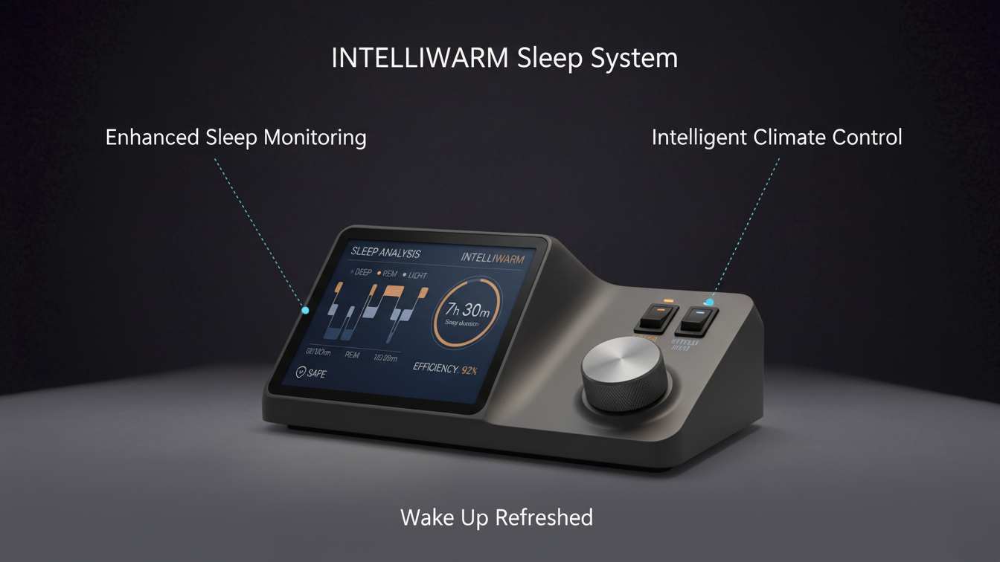
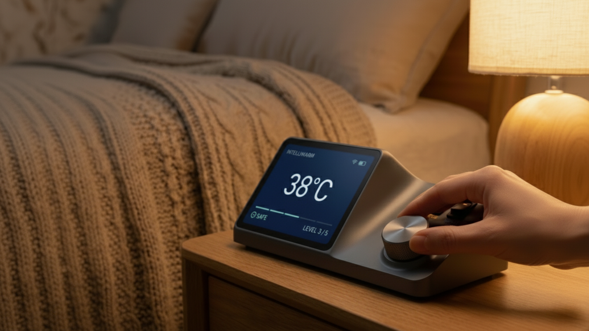
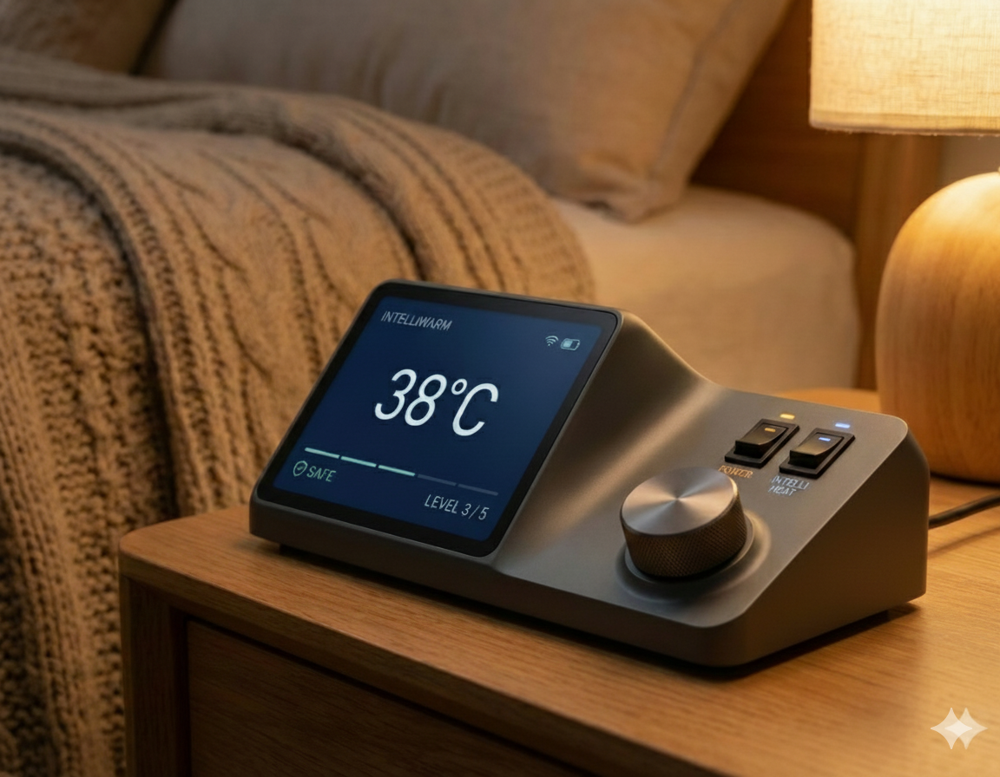
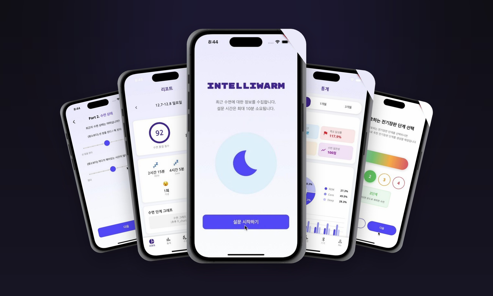

INTELLIWARM
Smart physical product · Ph.D. dissertation productization 박사논문 제품화 · Personal · 2026
A bedside device that monitors individual sleep and actively controls thermal comfort to optimize each night — the product realization of my doctoral research, “Development of a Monitoring and Temperature Control System for Optimizing Individual Sleep.” 개인의 수면을 측정하고 침상 온열 환경을 능동적으로 제어해 매일 밤의 수면을 최적화하는 침대용 디바이스입니다. 박사학위논문 「개인 수면 최적화를 위한 모니터링·온도제어 시스템 개발」을 실제 제품으로 구현한 플래그십 프로젝트입니다.

Key Features

Enhanced sleep monitoring & intelligent climate control
The device tracks sleep stages on a clear at-a-glance display, then drives intelligent climate control to keep the body in its optimal thermal window — so the user simply wakes up refreshed. 수면 단계를 측정해 한눈에 보이는 디스플레이로 보여주고, 사용자의 최적 온열 구간을 유지하도록 지능형 온도 제어를 수행합니다. 사용자는 ‘상쾌하게 깨어나는’ 결과만 경험합니다.

Form that disappears into the bedroom
A low, angled volume sits naturally beside a lamp; a single weighted dial and two hard keys replace app-dependence, so half-asleep control feels obvious in the dark. 낮고 비스듬한 형상이 스탠드 옆에 자연스럽게 놓입니다. 묵직한 다이얼 하나와 두 개의 물리 버튼으로, 잠결에도 어둠 속에서 직관적으로 조작할 수 있도록 앱 의존도를 낮췄습니다.


Designed from data

Grounded in observation, not assumption
Form and interaction decisions come from the dissertation's observation and experiment — collected sleep/environment data, feature extraction, and statistical analysis of how temperature affects sleep quality. 형상과 인터랙션은 가정이 아니라 박사연구의 관찰·실험에서 출발했습니다. 수면·환경 데이터 수집, 특징 추출, 온도가 수면의 질에 미치는 영향에 대한 통계 분석을 설계 근거로 삼았습니다.
Companion App

The app guides a short sleep survey, visualizes each night's sleep score and stage breakdown, and lets users set a preferred heating-pad level the system then automates. 앱은 짧은 수면 설문을 안내하고, 매일 밤의 수면 점수와 단계별 분석을 시각화하며, 사용자가 선호하는 전기장판 단계를 설정하면 시스템이 이를 학습해 자동 제어합니다. (Flutter 기반)